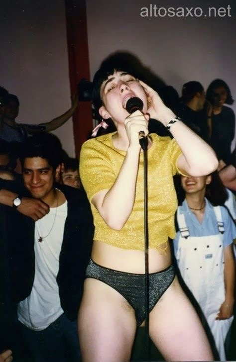

Just Core 1 - Interaction, and then the classes I have found online.
Really enjoyed building a collection and watching my progress over time by publishing week by week using GitHub.
My teacher never really explained CSS, just expected we would be able to use it, it felt like we went from simple HTML to JavaScript really fast.
I am really excited to learn more code, I do not want to rely on website templates or other people to do design work.
I want to work for museums, specifically in their Graphic Design and branding departments, so designing and adapting online platforms is going to be super important.
HTML is needed to create a website, CSS is for style and structure for the website, and javascript takes all of the information given and makes it function.
Github is a code hosting platform to collaborate and publish code for websites, as well as create a structured repository for projects of code.
Love the simplicity of this website and how all their branding matches.
Their products are meant to be soft on the skin and somewhat no coverage.
They have the values of creating products to enhance everyone's beauty,
rather than to cover up imperfections and make unrealistic beauty standards.
So it is understandable that they go for a super clean, and simple design,
and use color as a means to enhance, and not a focal point.
Their grid style for their homepage too is very straightforward in terms of design,
but in this case simple and easy is what they need. A user can use their website fast,
and get to their products fast without any obstacles.
obey giant
I love the evolution of Shepard Fairey's website,
I remember like 5 years ago it was super basic and
did not have a lot of his style in it. Now it matches
his work and his new brand super well. The way the
website flows from products to articles as you scroll
just how multi-faceted Fairey is, he has his hands in all
types of art and media, and needs his website to reflect that.
The color scheme of the dark grays and black mixed with the
bright red has always been the main colors in his work, and
I like how it compliments the webpage.
misterwives
Their website layout and aesthetic changes every album they release, which is super cool.
Like they do a complete overhaul of this site every year depending on the style of their album.
They just became independent too, so it's like one person doing their branding, and the lead singer
Mandy still does a lot of their social media. The bright colors and the electric nostalgia feel of
how it looks currently is an aesthetic I really enjoy, and want to incorporate more into my work.
My partner and I took this photo this weekend when we were out on the Rockaways. We love it out there and we are trying to save for a place out by the A train.

Kathleen Hanna and her time with Bikini Kill and Le Tigre gave me the motivation to be an artist and a writer. She is fantastic.
I wrote my first thesis on the film Scott Pilgrim vs. The World. It is a great movie if you have not seen it and it brings me just so much joy.
I enjoy really soft aesthetics on my webpages, more content than images, but everything should compliment.